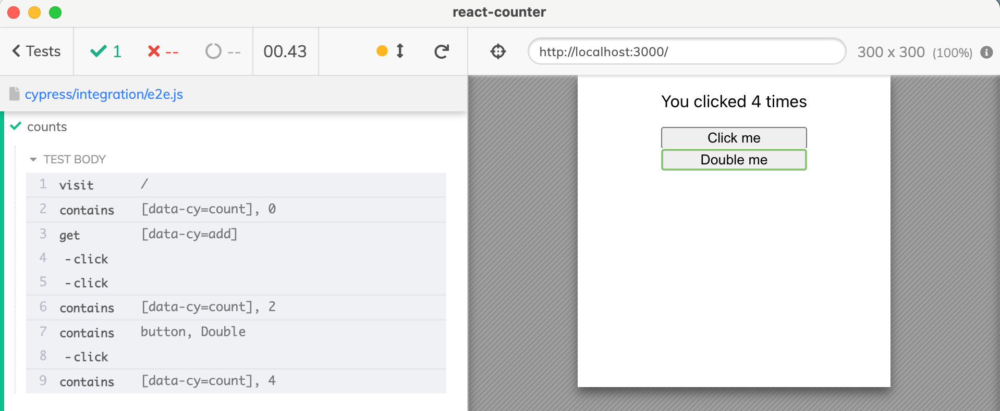
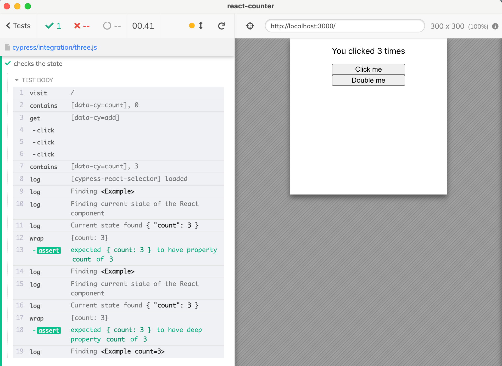
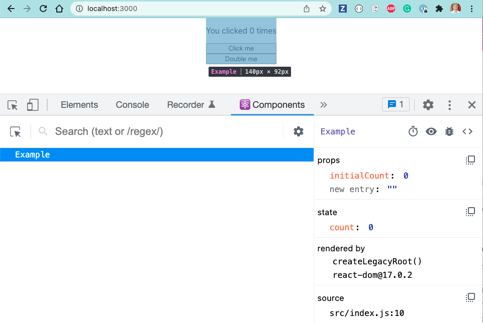
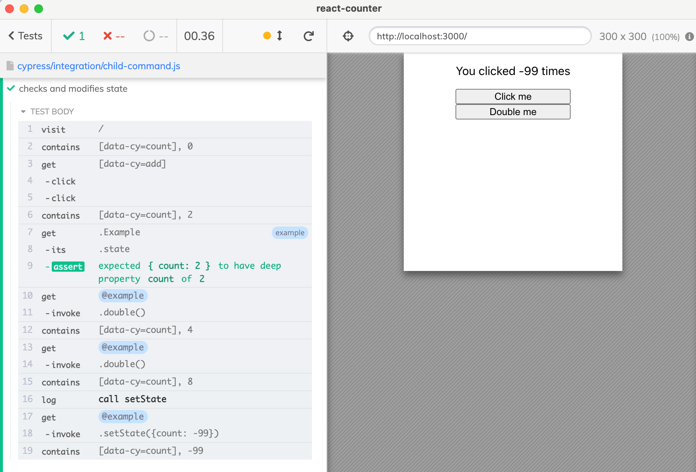

How to access the internal React component state from Cypress end-to-end tests.
Let's take a look at a simple React component with some internal state. You can find this component in src/Example.js file of my repo bahmutov/react-counter.
The test only works with the application through the HTML elements.

Access the React component
Can we find the React component instance? Yes, using the plugin cypress-react-selector we can find the Example component, rather than the DOM elements it renders. That is very convenient for checking the internal state of the component. For example, we could verify that clicking the button "Click me" three times changes the state of the component.
// find the React component cy.waitForReact(1000, '#root')
// three equivalent ways of checking component "Example" with "count: 3" state cy.getReact('Example').getCurrentState().should('have.property', 'count', 3) cy.getReact('Example').getCurrentState().should('deep.include', { count: 3, }) cy.getReact('Example', { state: { count: 3 } }) })
The tests find the component named Example and confirm its internal state.

Tip: for checking a complex object, cy-spok is the best.
When the application creates the Example component, it sets its prop initialCount, which we can use with cy.getReact('Example') to find the right component.
🎓 The plugin cypress-react-selector provides two high-level commands for finding components. If you need to find the DOM element by React component prop or state, use the cy.react command. If you want to find and access the React component instance, use the cy.getReact command.
In a sense, what we are able to do is what the React DevTools browser extension shows for the component.

Trigger component methods
Our Example component has an instance method double
1 2 3 4
double() { console.log('doubling the current value', this.state.count) this.setState({ count: this.state.count * 2 }) }
Can we somehow call that method from Cypress test? From the React component we need to get to the React Fiber, here is my solution following this StackOverflow answer.
cy.log('**call setState**') // set the application into the state that is normally impossible // to reach by just using the page interactions cy.get('@example').getComponent().invoke('setState', { count: -99 }) cy.contains('[data-cy=count]', '-99') })

A word of caution
Should you call the internal component methods from your end-to-end tests? Only in the extraordinary circumstances, I think. If there is no other way to verify the behavior of the application or trigger an application action, you could. At the same time, remember that you are tying your tests to the implementation, which will make the tests harder to update. But sometimes we need to call these "app actions" to get to the data state we need to test.